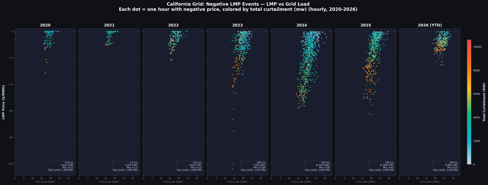
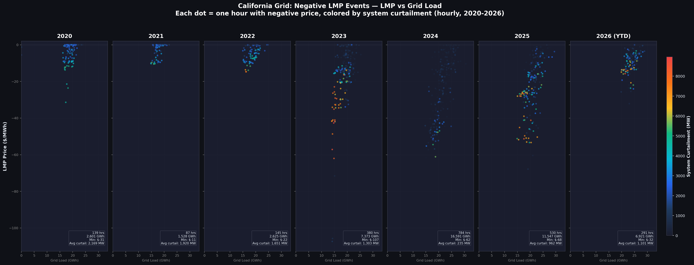
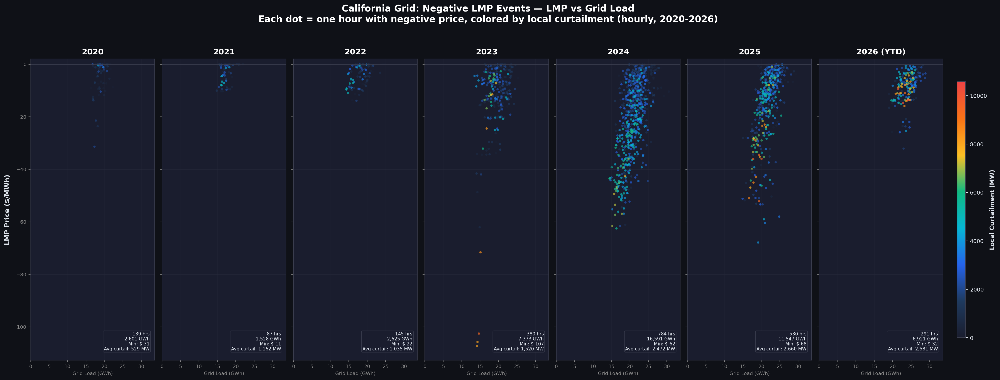
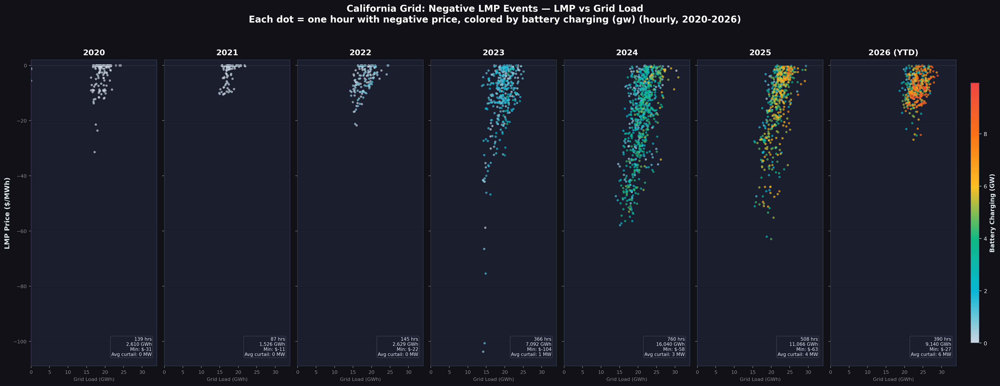
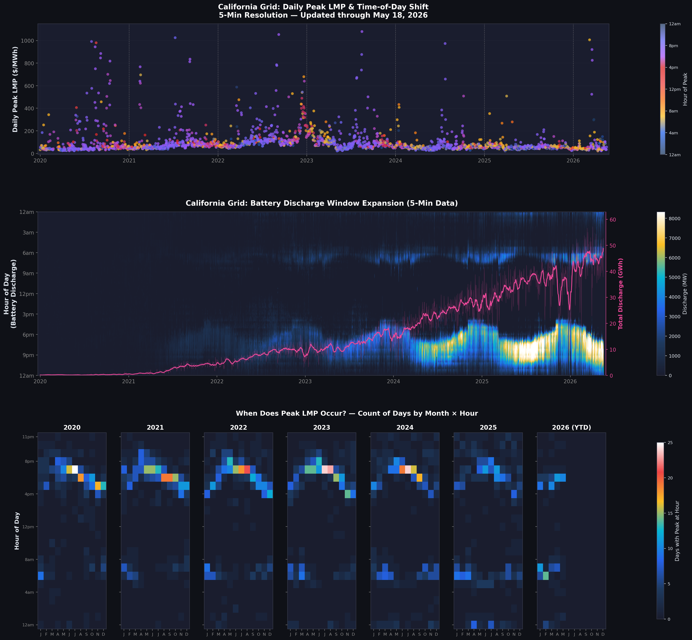
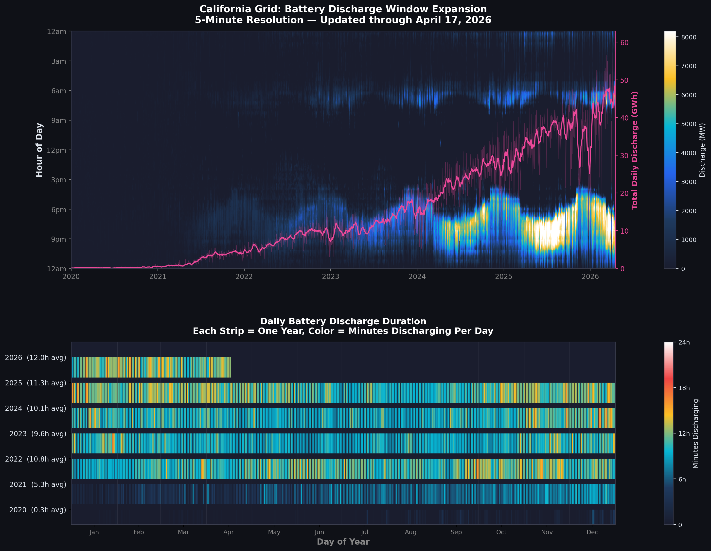

I have recently seen a lot of discussions and articles panicking about the sudden surge in negative power prices across European grids. While it may seem like a new crisis globally, the reality is that California is almost always a bellwether for grid-scale renewable transitions, and this fascinating phenomenon is no exception. California has been witnessing midline negative prices—specifically during bright, sunny midday hours—quite frequently for several years now.
As solar capacity on the grid dramatically increases, the notorious "duck curve" continues to deepen year over year, carving out a massive valley of midday oversupply where generation vastly exceeds the state's physical demand for power. To solve this imbalance natively, the grid needs a sponge: it must shift consumer and industrial demand into those critical solar hours, allowing operators to use the electricity cheaply (or in some extreme cases, literally being paid to draw power off the over-burdened wires).
This is precisely where grid-scale batteries are stepping up to become the most invaluable assets on the modern grid. Not only are batteries capitalizing on massive energy arbitrage—charging heavily during the day when prices are negative and discharging during the expensive evening peak—but their mere physical presence mathematically trims the periods of extreme oversupply. A transition of this magnitude cannot happen overnight, however. Slowly but steadily, California has been approving and building astronomical battery fleets, exceeding an incredible 16 GW of installed capacity on the system today.
The Mechanics of Negative Prices: Why Does It Happen?
Before diving deeply into the chart data, it is imperative to understand exactly why negative prices exist in power markets at all. To an outsider, it sounds deeply counter-intuitive—are utilities really being paid to consume power?
As a standard residential customer, you are rarely going to see this negative price reflected on your monthly utility bill. You are largely shielded from such lucrative times by retail rate-making, but importantly, you are also shielded from the highly stressful grid-emergency hours when real-time wholesale prices tear past $1,000/MWh. A traditional bill, or even robust Time-Of-Use (TOU) differentiation, is only roughly indicative of broad, smoothed-out market structures, not minute-by-minute volatility. The wholesale market, however, experiences enormous pricing swings on any given day.
The Economic Incentives: PTCs and RECs
It is logical to wonder why a renewable generator would ever agree to pay the grid to take their power, rather than simply turning off their turbine or clipping their solar inverter to avoid losing money. The answer lies in federal tax incentives and state environmental regulations.
Renewable power plants generate crucial revenue streams beyond the wholesale market via Production Tax Credits (PTCs) offered by the federal government, as well as by selling Renewable Energy Certificates (RECs). A massive utility-scale solar farm might be earning a combined $30/MWh in tax incentives for every single megawatt-hour it pushes onto the grid. Because of this artificial incentive floor, it remains highly profitable for that solar farm to bid negatively into the market—say, offering the grid -$25/MWh—because their $30/MWh tax credit still leaves them with a net positive profit of +$5/MWh.
This underlying financial structure ensures renewables are computationally dispatched before inflexible baseload fossil generators whose minimum operating constraints do not afford them the luxury of bleeding wholesale cash without government tax cover. The CAISO market has a strict lower bound of -$150/MWh to prevent a runaway algorithmic collapse, but actual prices frequently hover heavily in the -$10 to -$50 range during the spring.
During periods of low system demand and extraordinarily high supply (think of a sunny, pleasant spring afternoon), solar generation is maxing out, but air conditioning demands are practically zero. This creates severe oversupply. Over the years, CAISO has faced two distinct flavors of this supply-demand mismatch phenomenon:
- 1. System Curtailment: This occurs when the entire state is generating more power collectively than the entire state needs. As aggregate supply outstrips physical demand, generators race their bids into deep negative territory to ensure their power is taken, avoiding the complex costs of shutting down and performing multi-hour cold-starts later in the day.
- 2. Local Curtailment (Congestion): This occurs when the overall state generation is perfectly fine, but the physical transmission wires moving electrons from massive desert solar farms into coastal cities reach their thermal or reliability limits. While the state-wide system is balanced, a localized node is choked. The stranded generator offers negative prices specifically to incentivize power being routed elsewhere, hoping to buy space on the transmission line.

Breaking this total curtailment down further into its local and system components uncovers a highly concerning trend regarding grid infrastructure. Looking year over year, there has been a notable structural shift in the root cause of these negative prices. As seen in Figure 2, System Curtailment was heavily responsible for pricing spikes in the 2020 to 2022 timeframe. Beyond that point, while system-wide oversupply still penalizes the market with severe negative prices, the sheer quantity of hours facing state-wide curtailment actually begins to tighten.

In stark contrast, local congestion curtailment has become a glaring and escalating issue. The data reveals a fundamental evolution: the raw volume of generated solar energy across the state as a whole is becoming far less of an absolute problem than the physical inability to route it. Massive swathes of speculative solar projects are hastily connected to legacy grid infrastructure, causing deep structural interconnection bottlenecks.
Looking at Figure 3, the systemic transition is visually striking—the volume of highly curtailed intervals driven strictly by grid congestion explodes into vivid colors in 2023 and 2024. The implications here are stark: California desperately needs aggressive, capital-intensive high-voltage transmission upgrades. It also creates an incredibly lucrative mandate for developers to strategically co-locate new battery storage facilities directly at these heavily congested transmission nodes to soak up stranded energy.

The 2025 Inflection Point: Reversing the Curve
Looking at the data closely, it becomes abundantly clear that 2025 behaves completely differently than the five years preceding it. Up until 2024, the California grid was trapped in a consistently worsening plunge of negative price intervals. But something critically important finally happened: installed battery capacity crossed an enormous threshold. Its charging behavior transformed from a fringe grid asset into a foundational market force too large to be drowned out by solar generation.
For the very first time in grid history, both the depth of negative prices and the total volume of negative-priced hours were quantifiably lower in 2025 than in 2024. California has quietly built staggering battery fleets, and these batteries are finally soaking up the solar runoff in numbers large enough to flatten the price curve and spark a true macroeconomic reversal.

There are several extremely telling observations to extract from Figure 4:
Firstly, Panel 1 vividly confirms the plateau. The year 2024 holds the record peak of dense negative-priced intervals, but we clearly observe the density tightening and lifting upward (becoming less negative) in 2025. In fact, looking ahead at preliminary data, the entirety of 2026 is currently trending much healthier than 2025!
Secondly, look closely at the monthly breakdown in the bottom panel. Unsurprisingly, the absolute highest concentration of negative LMP hours reside squarely in the spring season (March to May). However, actual structural solar output generated heavily by the sun peaks significantly later (June and July). The reason the grid does not collapse into $0 pricing under July sunshine is the concomitant surge in air-conditioning demand. The scorching summer load simply swallows the solar generation whole, resulting in relatively few instances of negative oversupply.
Thirdly, and most pivotally, tracing the emerald "Daily Batt Charge" line against the negative-price hours establishes a clear, undeniable correlation that agrees with my initial thesis. It visually demonstrates that as massive battery charging deployments increase year over year, they work sequentially in tandem with a lifting of the absolute bottom of the market price floor.
As illustrated in Figure 5 below, when we revisit our LMP versus Grid Load scatter plot and instead color it dynamically by the volume of gigawatts currently being drawn into batteries, the effect is undeniable.

By observing Figure 5, we are starting to see significant, multi-gigawatt battery charging loads cluster thickly in the recent years. The batteries are deliberately targeting these highly curtailed hours. As they draw more and more power during these periods, they artificiality boost overall grid load, effectively moving the needle to the right, which inherently forces the clearing prices upward toward $0/MWh.
Total Dominance in Ancillary Services
During this rapid transition across the mid-2020s, batteries have not solely served as bulk load-shifters meant to flatten the duck curve. They’ve also systematically tackled one of the most mechanically demanding and lucrative tasks on the entire power spectrum.
To prevent rolling blackouts, the wholesale market must operate highly complex Ancillary Services (A/S) to meticulously balance supply against demand on a second-by-second basis, ensuring the absolute grid frequency stays tightly locked at precisely 60 Hz. This delicate balance requires specific generator participants to remain purely on "standby." They are paid generously simply to wait, holding capacity ready to ramp up or spin down at a moment's notice to correct the grid's vibration.
The Solid-State Superpower
Historically, fossil fuel peaker plants ran the Ancillary Services market. However, a massive gas-fired turbine relies on heavy, rotating mechanical mass. It can take crucial, agonizing minutes for a turbine to spin up to speed and stabilize, completely failing to address sub-second frequency anomalies.
Utility-scale lithium-ion battery fleets, on the other hand, are mechanically static. They utilize advanced solid-state power electronics and smart inverters to swap instantaneously between perfectly idle and full-throttle discharge in under 100 milliseconds. Because of this instantaneous perfection and complete absence of rotating inertia, lithium-ion battery plants have utterly gutted the traditional gas peaking business, capturing almost the entire A/S market overnight.


Referring to the four Ancillary Services charts in Figure 6, the overarching narrative is stunning. The cost of Non-Spinning Reserves generally showed strong seasonal correlation, historically peaking into expensive red/orange territory tightly tied to the strained summer months. But look carefully at 2025: the peak cost of procuring reserves has crashed to a tiny, scattered fraction of its historical benchmark. I will be sure to report back on the 2026 values once we clear the summer, but the ceiling appears to be permanently shattered.
The same trend is evident in Spinning Reserves. Regulation Down (paying a resource to drop its output to avoid over-spinning the grid) showed high, sustained prices throughout the entirety of early years, but is only recently beginning to show true seasonal dependence, peaking in the winter. Even then, the 2026 prices are an impossibly tiny fraction of the past peak prices. Finally, Regulation Up displays an opposing seasonal reliance compared to Regulation Down, peaking furiously in summer months. Once again, the highest prices in 2025 were barely one-sixth of the agonizing prices consumers used to foot the bill for in the early 2020s.
Displacing Gas and Shifting the Time of Peak
Lastly, but perhaps most tangibly for consumer wallets, we must address the daily peak market prices and the incredible way battery fleets are manipulating structural grid behavior over time.

As highlighted in Figure 7, we observe that the frightening frequency of extreme LMPs ($500 to $1,000+/MWh) has significantly plummeted as the raw gigawatt capacity of daily battery discharge has escalated. As batteries conquer a constantly rising percentage of the total demand slice (indicated by the coloring of the lines transitioning into high-fraction purple/pink territory), they directly displace marginal Natural Gas generation units.
Because the grid dictates that the single most expensive marginal gas unit required to satisfy demand sets the overall clearing price for everyone in those peak hours, kicking expensive, inefficient gas off the margin collapses the overall LMP rate card for the entire state. While severe price spikes become fewer and further between, they are naturally not eliminated entirely, still occasionally occurring across harsh winter freezes or severe summer heat waves.

This secondary effect of batteries steadily replacing natural gas in the evening peak hours, resulting in flatter prices overall, is better observed in Figure 8. As absolute daily battery discharge increases, it organically increases the percentage slice that batteries take from the total system load in the heaviest peak hour. The result is an undeniably cleaner distribution with fewer vicious outlier LMP anomalies.

With huge swaths of evening gas dispatched offline, algorithmic battery deployment is causing a highly fascinating temporal side-effect: they are actively shifting the actual time of day the peak price occurs.
Referring to Figure 9, looking closely at exactly what hour "Peak LMP" occurs across the day reveals an amazing breakdown. While it is fully expected that peak hours will happen during early evening (when citizens get back to their homes, crank the thermostat, turn on the TV), it is no longer the complete story.
1. Winter Anomalies: Observe Panel 1 of Figure 9. The dots representing the daily peak LMP are dramatically split by season. Instead of just purple/red spikes corresponding to sunset evening hours, we see massive amounts of yellow and orange dots corresponding to early morning hours! This perfectly aligns with significant winter heating demands hitting the grid on icy mornings before the sun's low irradiance clears the horizon.
2. Peak Dilution: Examine Panel 3's heatmap inside Figure 9. The historical localized 'choke-point' of the evening used to guarantee a massive, unavoidable price spike at precisely 7 PM. But the red spikes are cooling down into oranges and greens, indicating the peak is slowly flattening and spreading out. In recent years, while the highest prices still sit around the core 4 PM - 9 PM period, the apex is slowly shifting to slightly earlier times as batteries shave the heaviest tops.

To see exactly how algorithmic batteries react to these changing target times, examine the phenomenal data traces in Figure 10. The battery dispatch pattern over the years clearly reveals a highly intelligent seasonal dependence.
In Figure 10, specifically look at the shape of the dispatch curves. The primary evening arch shifts beautifully with daylight savings: occurring earlier in winter against short days, and substantially later in summer. However, in the dead of winter, we suddenly see a pronounced morning arch appear, proving batteries are eagerly discharging to capture revenue explicitly during the cold-morning LMP spikes we observed earlier in Figure 9.
It is imperative to note the physical constraints dictating this. Batteries are essentially reacting directly to those winter morning price peaks, but because the peak arrives so early in the day, they are computationally restricted. Having discharged through the previous night, they face a lack of a cheap, midday solar "price valley" directly preceding the morning peak, leaving them without the requisite time or cost advantage to recharge to 100%. Thus, while algorithmically flattening the evening load is mathematically straightforward since batteries gorge on midday solar right before sunset, it will take significantly more structural capacity to comprehensively flatten those deep-winter morning peaks.
Furthermore, we are now beginning to see the emergence of a nighttime arch stretching along the top of Panel 1. As batteries chase the most lucrative peak price across the evening, they fundamentally flatten it, which in turn causes the "peak price" to slide later into the night. Because of this, software is stringing out battery reserves, forcing them to discharge for incredibly long periods.
While almost all modern grid-scale utility setups are engineered and rated precisely around a "4-hour" maximum discharge design, Figure 10 Panel 2 definitively proves that by lowering output intensity to match a flattened load, batteries are maintaining unbroken, continuous discharge routines stretching deep past midnight. They are routinely completing sweeping arches spanning 10 to 12+ hours with ease—a trend that will only amplify further in 2026.
California's renewable inflection point has truly arrived. As intelligent, grid-scale batteries continue their exponential climb, the notorious duck curve is no longer an existential crisis to be managed—it is an enormous energy arbitrage opportunity simply being optimized. Looking at the sheer duration of modern dispatch arches natively clearing the 10-hour mark, it is abundantly clear that the exact same lithium-ion chemistry that conquered the short-term ancillary markets is already boldly treading into genuine Long-Duration Energy Storage (LDES) territory.